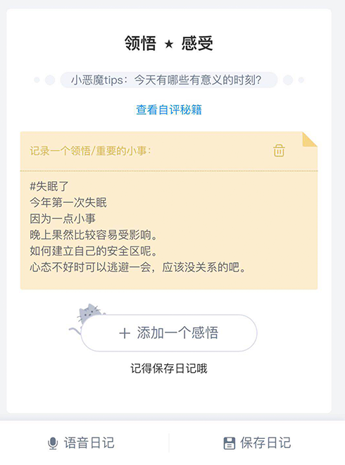
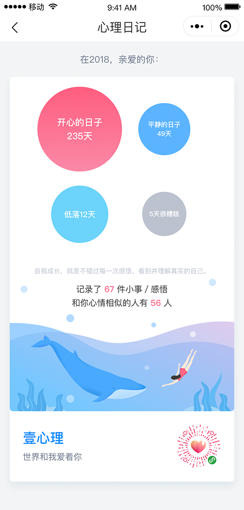
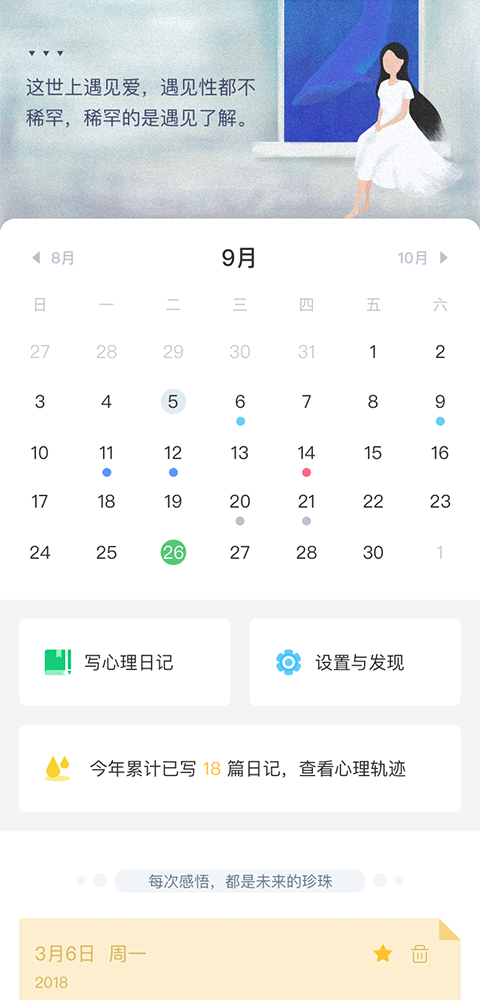
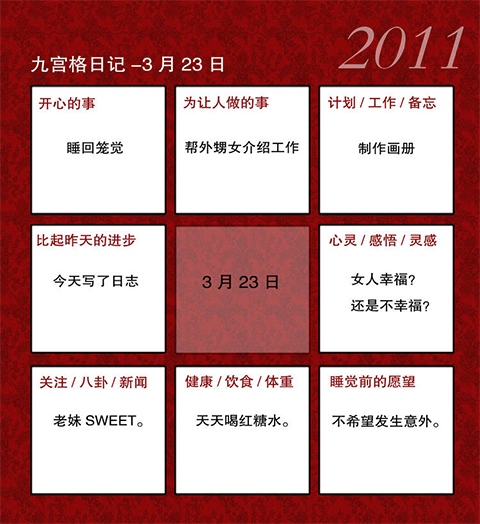
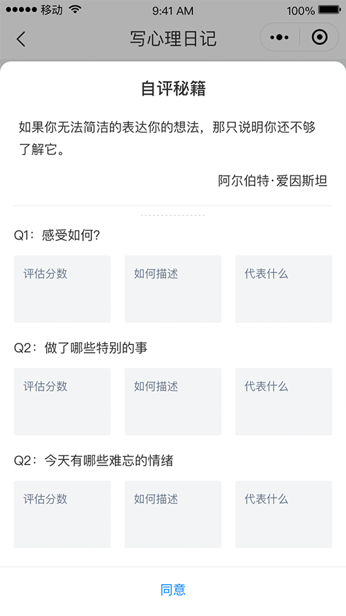

写日记对于每个人来说都不陌生。
什么是壹心理日记呢？
心理日记访问入口：
关注“心理学小工具”公号—>点击菜单“心理日记”
壹心理app—>点首页“每日成长”—>点心理日记
（因小程序限制，暂停服务中，优化后再上线~）
心理学家本尼的一项研究表明：
参与者每天花15分钟写下自己最“真实”、“不为人说”的痛苦的经历和感悟，连续写4-6天之后，焦虑水平会开始下降。
并且坚持约一年左右后，表现出更健康、乐观的心理状态，拥有更低的抑郁和焦虑水平。
而理由很简单，负面情绪得到释放，焦虑、情绪、身体疼痛得到“注意力”的分配，而不是被情绪覆盖。
还有一位研究者劳拉曾做过另一项实验：
他让实险者连续3天每天用15分钟的时间记录人生中最高兴的经历。
他对参加实验的人员是这样要求的：“请你们记录下来生命中最难忘、最高兴的经历，可能是恋爱经历，可能是读到一本好书，可能是呀到一段美妙的音乐。选择一段美好的经历，让自己重新去体会当时的心境，尽可能详细地记录当时的感受。”
这个实验的内容与上面的实验正好相反，但是却取得了相同的结果：
实验者提高了心理和生理的免疫能力，同样也表现出更健康、乐观的心理状态。
这2项实验要求，可以解读为：
- “对经历的感受”相当于描述自己的情感；
- “事后的分析”相当于描述自己对事物的认知；
- 参加实验的人员按照研究者的要求，相当于坚持一定时间写日记；
研究表明在日记中，类似有“我懂得了”“感觉到”“我认识到”等字眼的参与者，他们的心理和健康收益是最大的。
研究表明在日记中，类似有“我懂得了”“感觉到”“我认识到”等字眼的参与者，他们的心理和健康收益是最大的。
“有意义的时间”对于自我认同是非常重要的积累。
提高了心理免疫能力，容易从压力和痛苦中恢复。这就是写日记能够起作用的原因。
图片来自【壹心理日记-小程序】beta-1.0版
写日记还有一个优点，就是可以加深人们的记忆，更好的整合认知资源。思维更连贯。
就像把零散的朋友圈、微博、聊天记录，变成一个剧本。
因为如果把生活串成一个连贯的故事，那人们就可以更好地感知它、理解它、接纳它。
以及演绎出新的结果来，打破原来的“无法自拔”。
就像本尼所说：“这个世界充满未知和模糊，人们经常焦虑是因为难以理解事物的完整性和创伤性障碍的因果关系。于是，我们在寻找事件的完整性和意义，这样就能控制和预测自己的生活。”
并且，记录情绪和感悟，可能会给人带来意外的成长。
很多咨询师都会建议来访者，情绪失控时的观察很重要。
如同剧本故事里的神转折，人物间的关键矛盾爆发时，说明剧情到了最重要的一集。
愤怒或紧张后，认知和注意力的调节会聚焦在某一个问题上，而这时往往能够带来平时无法完成的突破。
图片来自【壹心理日记-小程序】beta-1.0版
很多人会用其他方式掩盖或逃避情绪。
为自己的情绪或想法感觉羞耻。
比如看综艺，玩游戏，刷动态，可以得到舒缓，但焦虑水平也因此上升。
逃避使人很容易陷入“挫败感——焦虑/恐慌——否认自己——容易出错——挫败感”的循环中。
接纳情绪并表达，可以帮助自己的判断不失衡，沟通/补救/提升的最佳时机也就不会因此而错过。
“我病了，我确是有病！……我不能得到一晚安安稳稳睡过；总是醒上五六次；有时开起两只眼睛过一夜……在每次强烈的伤心刺激之后，我的病便发作了……啊！啊！五尺之躯，已是这般消磨了！” ……“这种病是性的不道德——手淫。”
经过这样的表达，会引起更深刻的思考和行为的调整。沈从文在他的小说中不乏艳情片段，在写作时释放自己的压抑，也是一个不错的方法。
面对自己的问题时，用大众的衡量标准去评价自己，往往会让自己更难过。
心理日记的私密性，则是给自己这样一个氛围——这里没有标准，不需要像谁证明，只是表达自己，倾听自己。
心理日记也可以通过 一定的记录方式、自评引导，平衡情绪与注意力的分配，帮助性格完善、身份认同，提升意义感等等。
图片来自【壹心理日记-小程序】beta-1.0版
有一本书叫《晨间日记的奇迹》。
我也是一名喜欢“晨间写感悟，晚上记脑洞”的选手。
早晨上班路上写日记的好处实在太多了。忍不住想告诉所有人都去写。
书中说“早上写日记的好处”有5个:
- 可以做好一天的准备；——(计划性)
- 可以正确地写出昨天所发生的事情；——(效率性&忠实性)
- 冷静思考前一天的事情,可以中立地看待事情；——(中立性)
- 对于一个午餐和晚餐都要忙于迎合客户的上班族来说,早上是自己最自由 自在的个人时间,不会让写日记的习惯中断；——(持续性)
- 可以将过去宝贵的经验或回忆,运用在当天；——(灵活运用性)
作者这样写道：
“夜晚日记”里面，不管好事或坏事，在写日记的当下，情绪都会受到当天情绪或事件的影响。
因此一不小心，很容易就会变成极端的“后悔日记”或“反省日记”。
这样子的内容，无法让自己了解到自己为什么成功，或者为什么失败。
另一方面，“晨间日记”可以等到自己睡了一个晚上的好觉、高亢的情绪冷静下来之后，再慢慢地书写。
而且，就算经过了一夜的沉淀，所有的情绪也不可能会在一夜之间便消失，即使在早上才写日记，还是可以忠于自己，记录自己的情绪。
发生的事件内容，和当下自己的感受，对日记来说，如同车子的双轮一般,缺 一不可,所以我建议大家可以尽量将自己的情绪书写出来。
这是为什么呢？假如两者缺一的话，便无法看到内心深处的自己。
因此我们会很难从过去的经验或智慧当中获得宝贵的启示。
能写多少、就写多少的话,只不过是一种像“日志”一样的流水帐而已，并不是真正的“日记”。
假如只单纯写下自己情绪的话，回头看日记时，无法知道自己为什么会产生那样子的情绪,也无法得知最重要的原因。
根本搞不懂“为什么我自己会这么开心？” 或者“为什么我自己会这么难过？”
“晨间日记”可以拉长我们跟前一天晚上的时间距离，可以让我们更容易地去解决问题。
也就是说，“晨间日记”可以让我们更客观地去分析问题的本质，变成是一本可以帮助我们分析、解决问题的“问题解决”日记。
如果你也是一个像作者一样，容易在晚上沉浸在自己的小情绪中的人，可以试试她的方法。
夜晚可以听听心理FM，或者做一些可以发泄情绪、转移注意力的的运动、游戏、冥想；
早上再把前一天的经历叙述、表达出来，并有一点点分析。
另外还有一种九宫格日记法。
就像下面这张图：
图片来自网络
图片来自【壹心理日记-小程序】beta-1.0版
这样的日记就是加入的【计划性的内容】【健康和社交】【感悟和情绪】。
正式心理日记比较关注的几个部分。
保留情绪中真实的部分、持续、灵活、尝试分析问题的缘由，是写心理日记的核心点。
“壹心理日记”小程序，也是为了帮助用户记录这些重要的信息而设计的。
社交时间和学习工作时间，对一个人的自我价值的评价、心理健康状态是有很大影响。
而基础的健康主要与“睡眠”“饮食”“运动”有关。
【小小建议】
- 10分钟/天，每次写1-2个小纸条，或一条1-3分钟左右的语音；
- 试试持续14天以上；
- 为了培养好习惯，可以在看电影、听语音课、听书时，在壹心理日记小程序记录“小纸条”笔记；
- 记录真实的感受和几乎不会跟其他人说的那些想法，并写下你的“看法”；
- 告诉自己是安全的，决定权可以在自己的手里；
- 允许自己不开心，愤怒，并把他们记录下来，多问自己几个小问题（“写下那段经历”、“感觉如何”、“事后有什么看法”、“对自己产生了什么样的影响”）；
- 重要的感悟可以标记“星标”。
图片来自【壹心理日记-小程序】beta-1.0版
关注心理学小工具公众号
写心理日记，每天早上15分钟，克服拖延症~
在程序员写的千万条if/then里，心理学家发现了人生的秘密
作者:壹心理翻译社 #翻译社
至今为止，我接受比较多的训练主要来自两个流派——精神分析和森田疗法，森田疗法跟正念有关，它是正念的典型理念。
作者:K67IfYubM@gmail.cn
什么样的游戏能让人快乐？我们一下子能说出很多好游戏。那么这些游戏里有一个共同的规律吗？让我们通过荣格心理学理论深入浅出地揭开这个秘密。
作者:Doris